U ovoj viježbi radili smo vlastiti font. Otvorili smo program Fontographer i alatom pen crtali inicijale svog imena i prezimena te znakove hrvatske abecede.
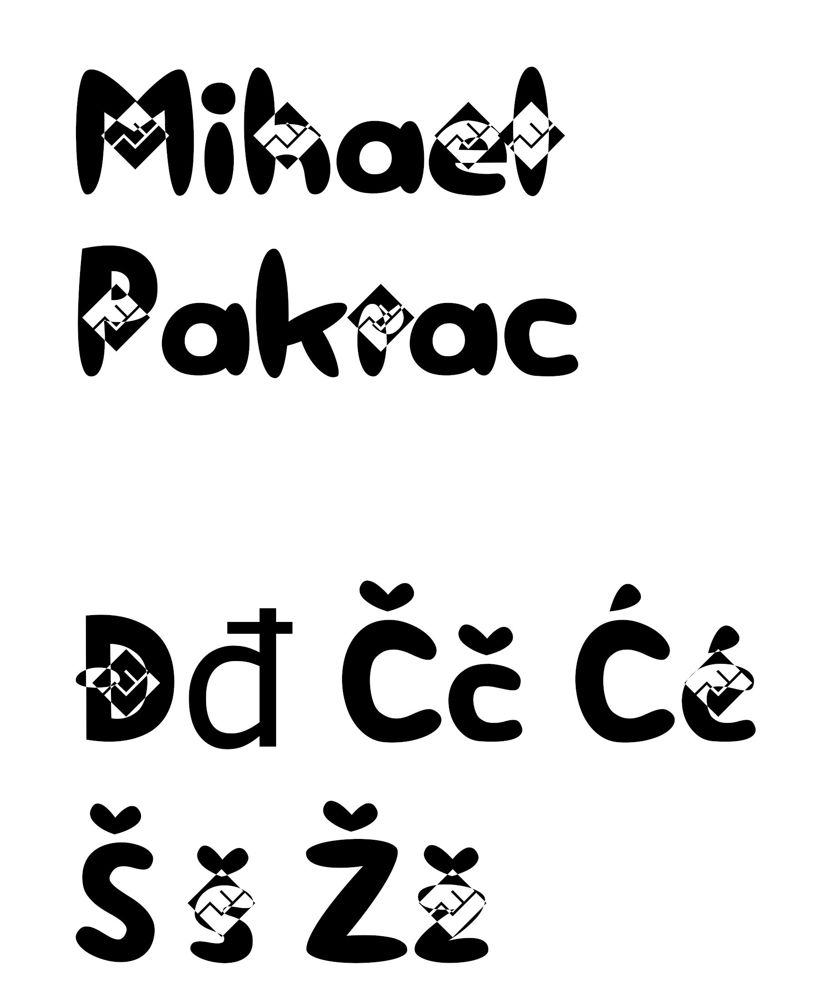U drugoj smo vježbi kreirali dvije bezierovie krivulje (parametarska krivulja definirana sa 4 točke i predstavlja temelj današnje vektorske grafike) kojima smo definirali boju i debljinu te između njih napravili blend. Preko krivulja smo napisali svoje inicijale i od njih napravili masku.
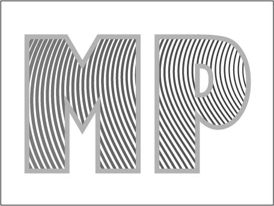U Illustratoru alatom Pen nacrtali smo objekte koje smo multiplicirali. Oblike smo više puta kopirali i aplicirali drugačijim bojama kreiranim u novoj Color grupi. Također smo koristili rotacije, scale, transparenciju, multipliciranje oblika… Kao zadatak morali smo napraviti vlastiti primjer.
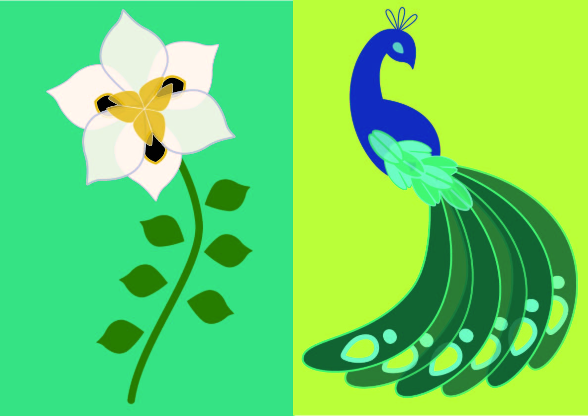U ovoj vjržbi smo obrađivali temu izrade složenih objekta koji se sastoji od više metod spajanja (Unite/Compound path) ili oduzimanja oblika (Difference/Subtract). Aplicirali smo više gradijenata (linearni, radijalni, mesh) od dvije ili više boja te poredali slojeve transparencije pri složenoj grafici.
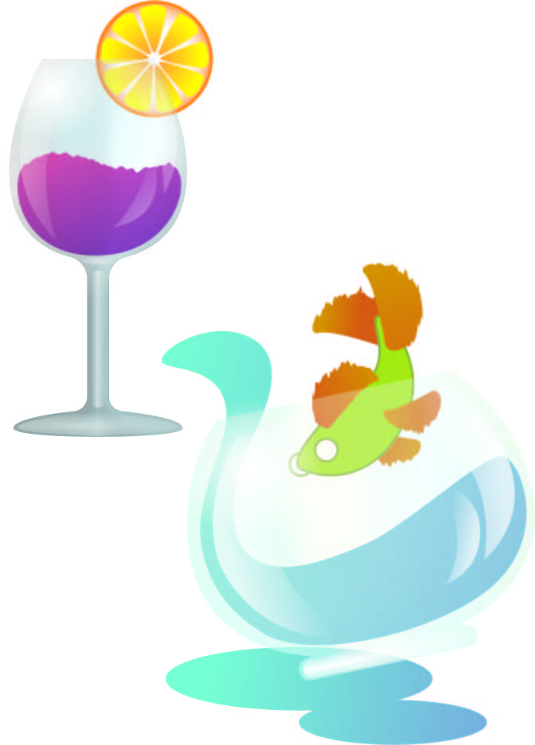U prvom djelu zadatka napravili smo font s nekoliko slovnih znakova. U drugom smo djelu kreirali jednostranični dokument u Adobe Illustratoru te pomoću alata za crtanje krivulja ilustrirali odabranu temu iz flore i faune podmorja.
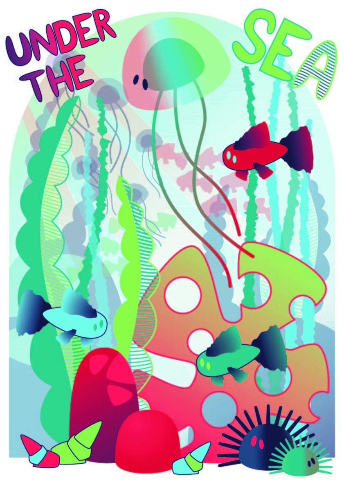
U ovoj vježbi bavili smo se retuširanjem fotografija. Pomoču selekcija (Lasso Tool), zamućivanjem, koloriranjem i kopiranjem, uklanjali smo nedostatke na licu i pozadnini. Također smo koristili i lokalne i globalne korekcije boja (Burn/Dodge brush, Levels, Brightness/Contrast).
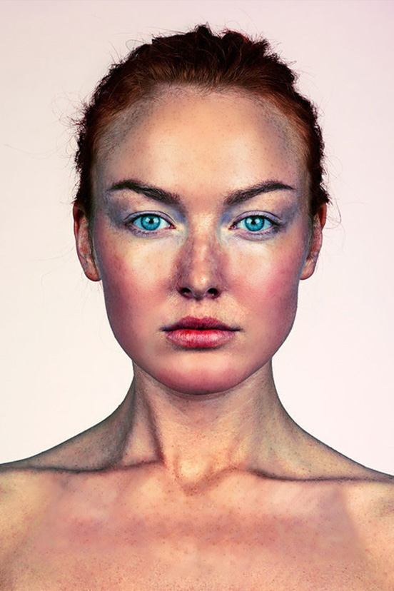 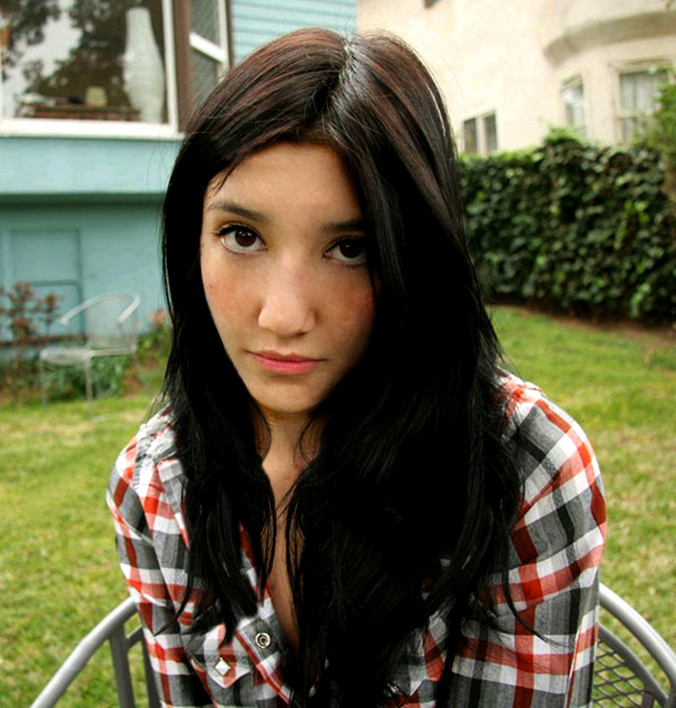U šestoj smo se vježbi upoznali s tehnikom koloriranja. Tehnika se najčešće primjenjuje na ctno-bijele fotografije. Selekcijom željenih dijelova slike stvaramo maske kojima skrivamo ili otkrivamo efekte kolorizacije. Boja se aplicira na zaseban sloj (layer) kako ne bismo uništili originalne tonove.
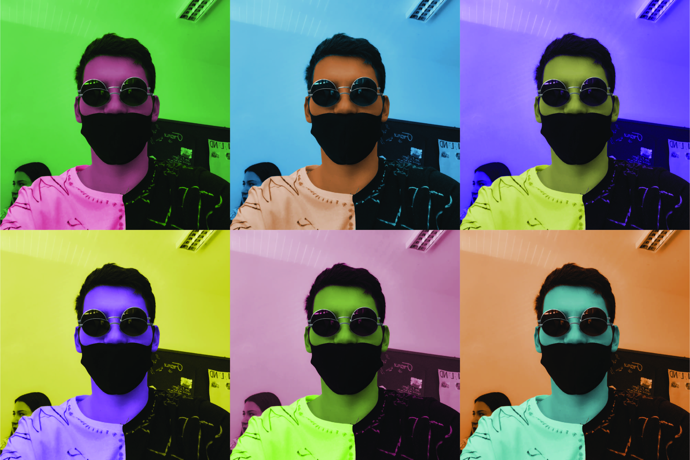 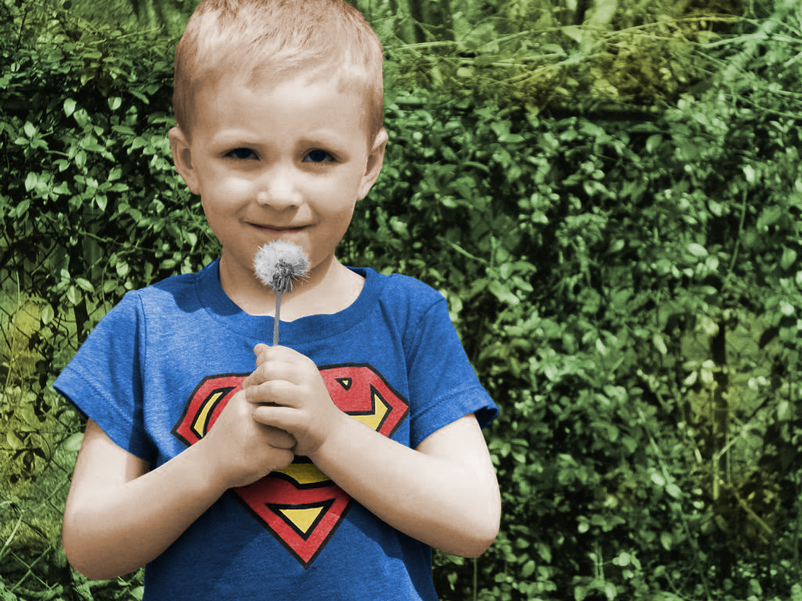Cilj ove vježbe na je bio naučiti fotomontažu. Fotomontaža je kombiniranje više fotografija izrezivanjem dijelova različitih slika i spajanjem u cjelinu. Ujedno smo se bavili izradom i uklapanjem sjena objekata koje smo uvezli izrezivanjem i korekcijom boja. 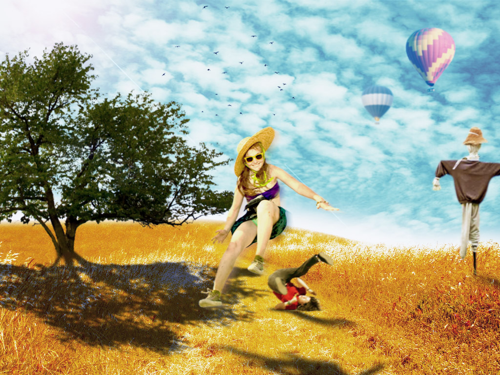
U programu Adobe Photoshop kreirali smo sliku kao kompoziciju više fotografiaj koristeći tehnike retuširanja, fotomontaže i koloriranja.
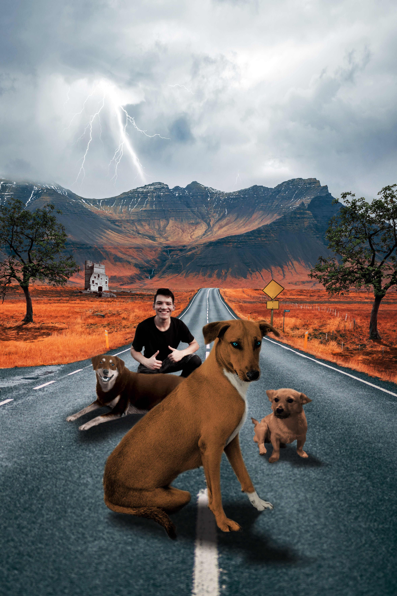
Ovom vježbom smo upoznali osnovne obrade video materijala i uvođenje multimedije u video projekt. Rezultat vježbe je bio kinemagraf čija je karakteristika spajanje statične i pokretne slike.

U devetoj vježbi bavili smo se rezanjem i spajanjem video isječka iz više izvora, video efektima, brisanjem i dodavanjem zvuka te dodavanjem i obradom teksta.
U ovoj smo vježbi radili vlastitu Web stranicu. Web stranicu smo kreirali putem označenog jezika HTML (Hypertext Markup Language), kojim definiramo tip sadržaja koji želimo prikazati.